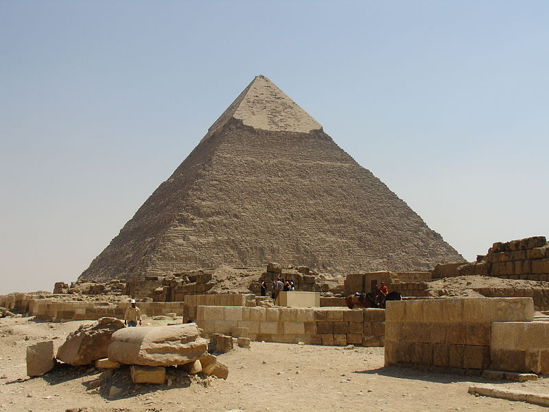
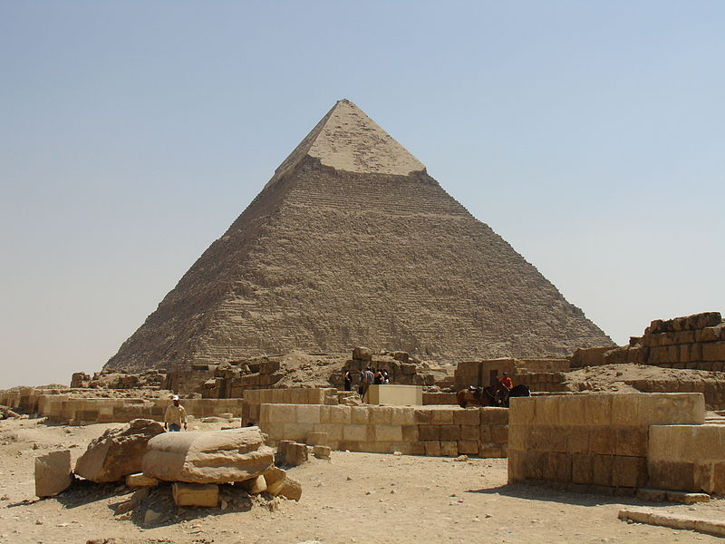
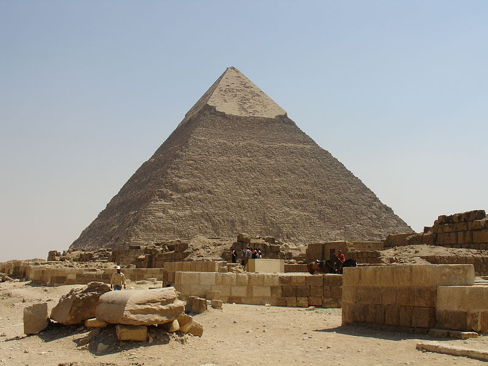
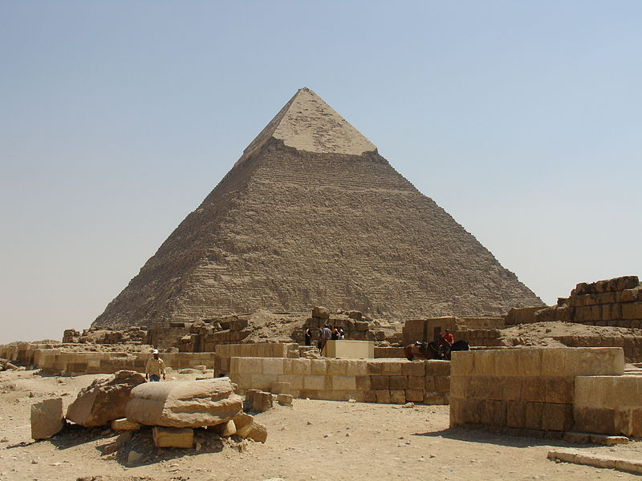
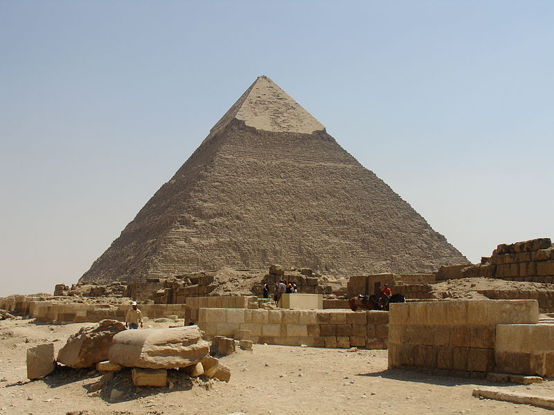

Фото галерија
Почетна
О аутору
Упутство
Завршни испит
Седам светских чуда античког света: Најстарије помињање листе светских чуда потиче од историчара Херодота (око 450. г. п. н. е.). Први пут свих седам чуда су заједно поменута у епиграму феничанског писца Антипатроса из Сидона (2. век п. н. е.), који је описао путопис по источном Медитерану свога времена. Грци су овај списак назвали „Седам атракција насељене Земље које треба обавезно видети“. Седам чуда је вероватно одабрано зато што је овај број за старе Грке имао симболику магичног броја. Опис седам светских чуда се налази у трактату из 6. века нове ере „О седам светских чуда“. Седам светских чуда старог света је скуп архитектонских дела које су стари Грци, нарочито у хеленистичкој епохи, сматрали врхунцем људске креативности и генијалности. Међутим, од ових седам чуда још само комплекс великих пирамида у Гизи и дан данас постоји.



 


